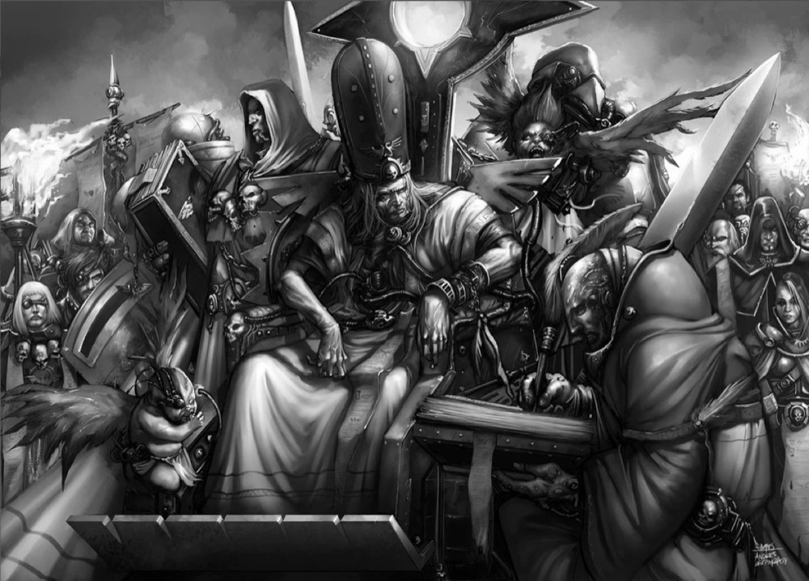

Age of Apostasy
| Age of Apostasy | |
|---|---|
| Comprising the Reign of Blood and the Plague of Unbelief | |
 An arch-cardinal of the Ecclesiarchy with his retainers, from an Administratum engraving of the period | |
| Date | Early M36; the Reign of Blood to 288.M36 (Administratum reckoning); the Plague of Unbelief some decades later |
| Location | Terra and the Imperium at large; Gathalamor, Fenris and the western worlds |
| Result | Goge Vandire killed; Sebastian Thor made Ecclesiarch; the Decree Passive; the Adepta Sororitas and the Ordo Hereticus founded; the Apostate Cardinal Bucharis overthrown |
| Belligerents | |
| Reformers and loyalists | Tyrants and apostates |
| Commanders and leaders | |
| † Killed in action | |
| Strength | |
| Casualties and losses | |
| The Reign of Blood and the Plague of Unbelief cost the Imperium untold millions; a thousand worlds rose when the Apostate Cardinal fell. | |
The Age of Apostasy was the second great age of civil war in the history of the Imperium, after the Horus Heresy. It lasted through the early centuries of the 36th millennium and is divided by Imperial historians into two parts: the Reign of Blood of the High Lord Goge Vandire, and the Plague of Unbelief, the rebellion of the Apostate Cardinal Bucharis of Gathalamor that came a few decades after Vandire's death.[1]
Its roots were in the long contest between the Administratum and the Adeptus Ministorum for the government of the Imperium. In the late 35th millennium the Ministorum, enriched by its role in the Nova Terra Interregnum, had grown strong enough to dictate policy to the High Lords. The Administratum fought back by intrigue, and in the early 36th millennium its Master, Vandire, seized the office of Ecclesiarch as well as his own and for a time ruled the Imperium alone. His rule was a reign of terror directed against imagined heretics. It ended when the loyalist Space Marines and the Mechanicus besieged Terra, when the preacher Sebastian Thor raised a rival faith, and when Vandire's own guards turned on him.[1][2]
The wars led to a thorough reform of the Imperium's religious and political order. Thor, who succeeded Vandire as Ecclesiarch, forbade the Ecclesiarchy to keep armed men by the Decree Passive, founded the Adepta Sororitas, and refashioned the Imperial Cult around moral and spiritual ends rather than political ones. The Inquisition formed the Ordo Hereticus to watch over the Imperium's own officials. The age is remembered as one of the bloodiest in the Imperium's history after the Heresy.[1]
Background
[edit]The state church
[edit]By the end of the 34th millennium the Adeptus Ministorum was the wealthiest and most widely present organisation in the Imperium. Its tithes took precedence over those raised by the Administratum, leaving the Administratum's coffers poor, and its Ecclesiarch, who spoke with what was held to be the authority of the Emperor, influenced every part of Imperial government: the raising of armies, the conduct of wars, the appointment of sector lords. The Adeptus Astartes and the Mechanicus, both of which resented the church's pretensions, drew away from Terra.[1]
Over the 35th millennium the Administratum recovered some of its position, by a slow policy of placing its supporters in key offices and ensuring that those the Ministorum placed were weak or venal. It was an effective but ruinous strategy, and it laid the ground for what followed. In an effort to reverse its decline the Ecclesiarch Benedin IV moved the Holy Synod from Terra to Ophelia VII, a rich world of the Segmentum Tempestus, ten thousand light years from the Senatorum Imperialis. Out of reach of the High Lords the Ecclesiarchy grew in strength and raised its own armies and fleets, the Frateris Templar, which rivalled the Imperial Army and were hated wherever they went.[1]
Three centuries later the Ecclesiarch Greigor XI announced that the Synod would return to Terra. The cardinals opposed it, and with reason: the move took more than a solar decade and was paid for by a great increase in tithes, which starved whole worlds to rebuild the Ecclesiarchal palaces on Terra. Greigor died of food poisoning, and the exactions went on.[1]
Warp storms
[edit]As the Ecclesiarchy bled the Imperium, the Warp became more violent. In the early 36th millennium the incidence of Warp storms rose by an order of magnitude, severing whole sectors from the rest of the Imperium. The central government of many worlds collapsed. The Traitor Legions came out of the Eye of Terror, Ork space hulks drifted into regions that they had never reached before, and the Drukhari used the Webway to raid at will. Countless sects sprang up, many proclaiming that the God-Emperor was passing judgement and the end of days had come. Anyone who tried to reason with the doom-sayers was called a heretic, and many worlds tore themselves apart in an orgy of penance and violence.[1]
The Reign of Blood
[edit]Goge Vandire
[edit]Goge Vandire, the 361st Master of the Administratum, had risen by bribes, threats and assassination. He disliked the Ministorum and had plotted against it for years. Shortly before he became a High Lord he engineered the election of a man of his own choosing as Ecclesiarch, Paulis III, one of the weakest and most corrupt men to have held the office. When confidence in the new Ecclesiarch collapsed, Vandire entered the Ecclesiarchal Palace with his retainers and killed him. He proclaimed himself both Ecclesiarch and Master of the Administratum, and purged the Holy Synod. Cardinals who did not flee were killed, and their replacements were chosen for weakness or loyalty.[2]
Vandire claimed that he spoke with the Emperor's authority, and that in trances he communed with the God-Emperor. He had every utterance written down by his clerks, and many of his decrees were visibly insane. He broke the Master of the Adeptus Astra Telepathica, Lord Phaedrus, by having a Culexus Assassin sever his link to the Warp, and kept him alive on a life-support machine as a puppet. He took a convent of warrior-women from the agri-world of San Leor, the Daughters of the Emperor, into his service by demonstrating that a shot from their leader, Alicia Dominica, could not harm him. The demonstration relied on a concealed conversion field, but the women had never seen such technology and took it for a miracle. He renamed them the Brides of the Emperor and kept them as his bodyguard and executioners.[2]
The seven decades that followed were called the Reign of Blood. The resources of the Ministorum went into pogroms against heretics and into monuments to the Emperor and to Vandire himself. Distant worlds were adorned with spires a kilometre high, while the Ecclesiarchal Palace at Terra decayed. The Frateris Templar and the Brides enforced obedience. When the Synod tried to have him assassinated, the Brides locked themselves into the meeting chamber with the cardinals and came out an hour later carrying their severed heads. After that opposition within the Ecclesiarchy ended.[2]
Sebastian Thor
[edit]The challenge came from the periphery. On the devastated world of Dimmamar a priest called Sebastian Thor preached against the injustice of the High Lord's rule. His eloquence drew the faithful from other worlds, and the assassins sent to kill him were often converted. When the Frateris Templar were sent against Dimmamar, the whole fleet was destroyed in a Warp storm so great that it persists four thousand years later, the Storm of the Emperor's Wrath. Thor came to an understanding with the surviving members of the Confederation of Light, a sect of the Imperial Cult that had been outlawed by the Ministorum since the First War of Faith in the 32nd millennium, and they became one movement.[1]

The Terran Crusade
[edit]Meanwhile the Adeptus Astartes and the Mechanicus, cut off from Terra, had fortified their own worlds and held to their own judgement. As the news of Thor spread, many Chapter Masters in the Segmentum Solar spoke in his favour. The Fabricator-General of Mars, Gastaph Hediatrix, demanded that the Holy Synod put Vandire on trial. Vandire's answer was to dissolve the Senatorum Imperialis and to order his remaining forces against the Space Marines and the Mechanicus, whom he declared traitors. Most of his commanders refused. The Fabricator-General saw that the High Lord would have to be deposed by force.[2]
A force of Mechanicus Tech-Guard, led by four Chapters, the Imperial Fists, Fire Hawks, Soul Drinkers and Black Templars, sailed for Terra. The Black Templars' chronicle, which names High Marshal Sigenandus as their commander, calls the campaign the Terran Crusade; Imperial historians usually call it the Wars of Apostasy.[3] It was the first time since the Horus Heresy that armed Space Marines had landed on the soil of Terra. For months the force besieged the Ecclesiarchal Palace, and the siege was broken when the Black Templars' Emperor's Champion, Navarre, carried the Chapter's banner into a breach after its bearer fell. The Imperial Fists' Chapter Master, Lazerian, gave him the title of Captain of the Banner for it.[3]
The end of the Reign
[edit]It was not the Space Marines who killed Vandire. Within the Imperial Palace, the Adeptus Custodes had kept their vigil over the Golden Throne through the whole age, cut off from the anarchy outside. When the Space Marines landed, a small party of Custodians led by a Centurion of the Companions came out of the Palace by secret ways. They surfaced near Vandire's audience chamber and met the Brides of the Emperor. The Centurion laid down his arms and for an hour pleaded with them to renounce their oaths. When he failed, he led Alicia Dominica and five of her sisters through the Eternity Gate to stand before the Golden Throne. What they saw there is not recorded.[2]
When they came out the Brides resumed the name of Daughters of the Emperor. They went back to the Ecclesiarchal Palace and Dominica denounced Vandire. The words are engraved on the black marble of her sarcophagus: that he had turned from the Emperor's light, profaned His name and almost destroyed what He had built, and that there could be no mercy for such a crime. Vandire's last words were a complaint that he had no time to die, as he was too busy. Dominica beheaded him with a single stroke of her power sword, and his rosarius, which had saved him on San Leor, was cut in two.[2]
Reforms
[edit]Sebastian Thor became Ecclesiarch. He dismantled Vandire's regime, restored independent High Lords to the Senatorum Imperialis and made the Ecclesiarchy and the Administratum autonomous again. The Confederation of Light's teaching replaced the doctrine of the Temple of the Saviour Emperor, which had held that the state church should dominate the government of the Imperium. Under Thor the Ministorum's aims became moral and spiritual, the pursuit of individual salvation through belief in the God-Emperor and not of institutional power.[1]
The High Lords issued the Decree Passive, which forbade the Ecclesiarchy to keep "any force of men under arms", and Thor disbanded the Frateris Templar. Because the decree named men, he used it to turn the Daughters of the Emperor into the Orders Militant of the Adepta Sororitas, the Sisters of Battle. The Inquisition, for its part, founded the Ordo Hereticus to prevent another tyrant from arising within the Imperium's own offices, with the Sisters as its Chamber Militant, and the Ordo Sicarius to watch over the Officio Assassinorum. The Sisters share the faith of the Ecclesiarchy but owe their final loyalty to the Emperor, and in a quarrel between the Ministorum and the Inquisition they look to the Inquisition first.[1][4]
The Plague of Unbelief
[edit]Bucharis
[edit]The last great upheaval of the age was a rebellion that had grown in the shadow of the Warp storms. Cardinal Bucharis, whose diocese on the Cardinal World of Gathalamor was poor, vowed to build one of the greatest temples in the galaxy, and enslaved his people to build it. To get more resources he seized the mining world of Rhanda with a force of mercenaries, and with the help of Admiral Sehalla and Colonel Gasto of the Rigellian XXV regiment he conquered fifty worlds in seven years. The Warp storms that covered the region hid his realm from Terra, and he used his control of the local Navy to keep news of Thor's reforms from his subjects. He announced that the Ecclesiarchy was fallen and corrupt, made himself the mouth of the Emperor, as Vandire had done, and taught his people that the poor and the weak were undeserving of concern.[5]
Fenris and Chiros
[edit]Bucharis made one fatal error. His armies came to Fenris, in the territory of the Space Wolves, in the course of their advance to the north. The Space Wolves' fleet attacked his rebel Navy as it arrived, and for three years the Chapter fought a guerrilla war around the Fang while the rebel army besieged it, until a fleet of Space Wolves battle barges under Kyrl Grimblood arrived and drove the rebels from the mountains. Many of the rebels who escaped died in the snows of Asaheim, hunted by Fenrisian wolf packs. Bucharis escaped by shuttle.[5]
The attempt to conquer Chiros was worse. The Chirosians, who were hunters, turned their whole planet into a guerrilla war. Millions of marksmen wiped out the invaders in ambush, and a suicide squad blew up the rebels' camp. When the news spread through the Apostate's empire, the worlds began to rise: Guryan, Dolsia, Vaust, then Colcha, where the people stampeded herds of gorbeasts into the tank companies, and Methalor, which destroyed its own hive in an inferno.[5]
Confessor Dolan
[edit]The Ecclesiarchy sent the Confessor Dolan Chirosius to Gathalamor to demand Bucharis's surrender. The Apostate nailed the messenger's body to the palace gates, took the Confessor prisoner and dragged him in chains across a continent for six months. At a show trial the Confessor was allowed to speak, and he used the occasion to call the worlds to revolt. Bucharis had him tortured for eight months, and he died calm. His body vanished before the scavengers could reach it. When his death was announced a thousand worlds rose at once. The palace was stormed, traitors opened the gates, and Bucharis was caught at the spaceport and torn apart by a crowd.[5] The Inquisition purged his empire and the Ecclesiarchy planted thousands of missions in it.
Legacy
[edit]The age left permanent marks. The Ecclesiarchy never again held such political power. The Frateris Templar were never raised again as an army, although the Decree Passive has been interpreted loosely in later centuries, and bands of Frateris Militia, penitent crusaders such as the Redemptionists, and the Sisters of Battle are all tolerated under the watch of the Ordo Hereticus. A distinct sect of the Imperial Cult, the Thorians, takes its name and its teaching from the saint of the age. The Adeptus Astartes and the Mechanicus, having been obliged to intervene, were more conscious of their independent role in the Imperium's defence.[1]
The dating of the age is disputed. The Administratum register gives the Decree Passive as 288.M36 and places the end of the Reign of Blood immediately before it. A Black Templars chronicle dates the Terran Crusade to 378.M36, which cannot be reconciled with Thor's death in 350.M36 and is probably a later copyist's error or a count made by a different calendar. This article follows the Administratum.[1][3]
Timeline
[edit]Dated events of the age, in the Administratum reckoning. See also 36th millennium.
| Date | Event |
|---|---|
| 991.M35 | The Cursed Founding, on the eve of the age. |
| 104.M36 | The War of Recovery in the Mortuam Chain begins. |
| c. 218.M36 | Goge Vandire holds the offices of Master of the Administratum and Ecclesiarch; the Reign of Blood begins. |
| c. 238.M36 | Sebastian Thor born on Dimmamar. |
| 263–277.M36 | Revolt in the Jericho Sector; Mordecai Haarlock overthrows Vandire's Over-Governors. |
| c. 288.M36 | The Terran Crusade of the Confederation of Light; Vandire beheaded by Alicia Dominica. |
| 288.M36 | Thor becomes Ecclesiarch; the Decree Passive; the Adepta Sororitas and the Ordo Hereticus founded. |
| c. 300–310.M36 | The Plague of Unbelief of Cardinal Bucharis; the siege of Fenris. |
| 350.M36 | Thor dies, aged 112. |
| 378.M36 | Date given for the Terran Crusade by a Black Templars chronicle. |
| 010.M37 | The Age of Redemption begins. |
See also
[edit]References
[edit]- ^ a b c d e f g h i j k l Liber Ecclesiasticus (M37). Adeptus Ministorum.
- ^ a b c d e f g Annals of the Reign of Blood (M36). Administratum Archive, Terra.
- ^ a b c Chronicle of the Terran Crusade (M36). Black Templars archive.
- ^ Charter of the Ordo Hereticus (M36). Inquisitorial Fortress, Terra (restricted).
- ^ a b c d Mak, Obyss (M36). The Chant of Days. Gathalamor.
Further reading
[edit]- Mak, Obyss (M36). The Chant of Days. Gathalamor. A Scrivener's lament of the period: "Blackest of Ages, Saddest of Times."
- Liber Ecclesiasticus (M37). Adeptus Ministorum.